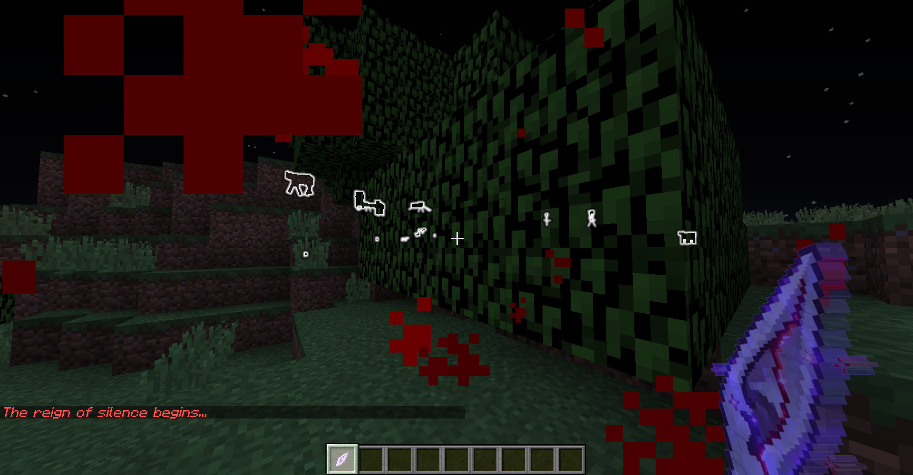

Sensorium
Projet personnel

Sensorium
Projet personnel pour apprendre une nouvelle manière de coder une application.
Contexte
Dans le cadre d’un projet personnel, j’ai développé un mod pour Minecraft nommé Sensorium, visant à enrichir le jeu de base par l’ajout de nouveaux éléments et de mécaniques orientées RPG et aventure.
L’objectif principal de ce projet était d’explorer une nouvelle manière de coder et d’apporter des modifications à une application déjà existante.
Ce projet m’a permis de découvrir et d’utiliser le format JSON, de renforcer mes compétences en Java, ainsi que de m’initier au concept de programmation événementielle.
Le concept du mod est simple : implémenter de nouveaux artefacts, chacun représentant un sens en particulier (ouïe, vue, toucher, etc.).
Contribution personnelle
- Implémentation de nouveaux items et artefacts dans le jeu à l’aide de fichiers JSON
- Gestion de leurs effets via du code Java
- Conception et design des items
- Exploitation du code existant de Minecraft afin d’ajouter des effets de particules, des effets sonores, etc.
- Maintenance et mise à jour de la page de téléchargement du mod
- Documentation et suivi du projet
Ce que j’ai appris
- Utiliser et comprendre des fichiers JSON
- Programmer des événements au sein d’un jeu
- Exploiter et adapter du code existant
- Analyser une application et se documenter efficacement
- Gérer les aspects externes du mod : page de présentation, description, communication et contact